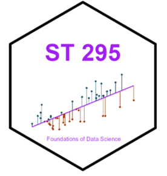
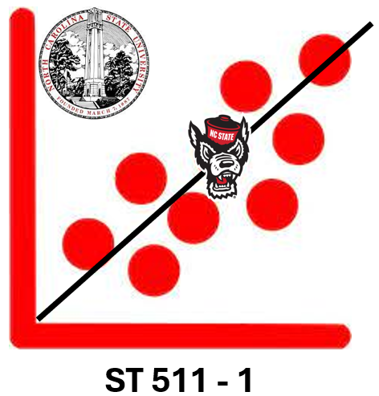
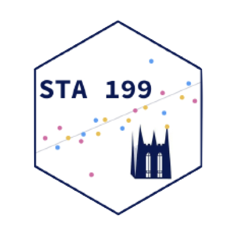

Teaching
Courses
| Course | Institution | Website | |
|---|---|---|---|
| Data visualization with ggplot2 | Data Carpentry |
Spring 2020 Fall 2019 |
|
|  | ST295 - Introductions to the Foundations of Data Science with R | North Carolina State University | Developed + taught 1 section, in-person during Spring 2025 |
| ST307 & ST308 - Introduction to Statistical Programming- SAS; Introduction to Statistical Programming-R | North Carolina State University | Course coordinator since Spring 2025 | |
|  | ST511 - Statistical Methods For Researchers I | North Carolina State University | 2 sections, in-person + during Fall 2024 |
|  | STA 199 - Introduction to Data Science and Statistical Thinking | Duke University |
Fall 2023: Section 1 and Section 2 Summer 2023 Spring 2023 Fall 2022 |
| Stat 216 - Introduction to Statistics | Montana State University | 11 sections, in-person + online since Spring 2013 - Spring 2022 | |
| Stat 217 - Intermediate Statistics | Montana State University | 7 sections, in-person + online since Spring 2013 - Fall 2019 |
Philosophy

Prior to my time at Duke, I’ve taught multiple sections of Introductory and Intermediate Statistics at Montana State, developed their Intermediate Statistics online course, and helped integrate R into the Introductory Statistics curricula. I prioritize community, communication, and respect in my classroom. I want to provide a space where we can freely talk about the material, embrace mistakes, and learn together throughout the semester.
Interests
My teaching interests align with my passion to inspire students into paths of statistics and data science. Thus, I am interested in courses such as, but not limited to:
- Introduction & Intermediate Data Science Courses
- Introduction & Intermediate Statistics and Data Analysis Courses
- Introductory and Advanced Data Visualization in R
- Data Literacy
- Spatial Data Analysis
- Probability Theory
Awards
Teaching Excellence Award at Montana State University (2022) given to students who have made a high impact on undergraduates’ lives by helping them grow in knowledge, skill, and confidence
Outstanding Graduate Teaching Assistant Award at Montana State University - College of Letters and Science (2021)
Outstanding Graduate Teaching Assistant Award at Montana State University - Department of Mathematical Sciences (2017)